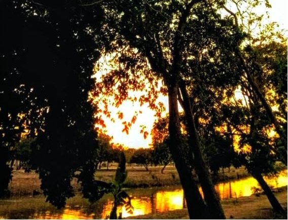

Our Rafting Trips

1. Siren's Pass (Beginner Level)
Duration: Half day (4 hours)
Ideal for families and beginners. Enjoy a smooth ride along the most scenic stretches of the Manzanares River, combining local stories with a relaxed musical atmosphere.

2. Manzanares Falls (Intermediate Level)
Duration: Full day (7 hours)
A dynamic experience with Class II and III rapids. Designed for those seeking more adrenaline, surrounded by lush riverbank vegetation and stops for a traditional local lunch.

3. Joropo Bend Expedition (Advanced Level)
Duration: 2 Days / 1 Night
The ultimate river adventure in the region. Challenge complex rapids with specialized guides, riverside camping, and an evening campfire featuring live traditional music.
Comparison Table of Available Trips
| Trip Name | Difficulty | Duration | Base Price |
|---|---|---|---|
| Siren's Pass | Easy / Beginner | 4 Hours | $35 USD |
| Manzanares Falls | Moderado / Intermedio | 7 Hours | $65 USD |
| Joropo Bend Expedition | Advanced | 2 Days | $120 USD |